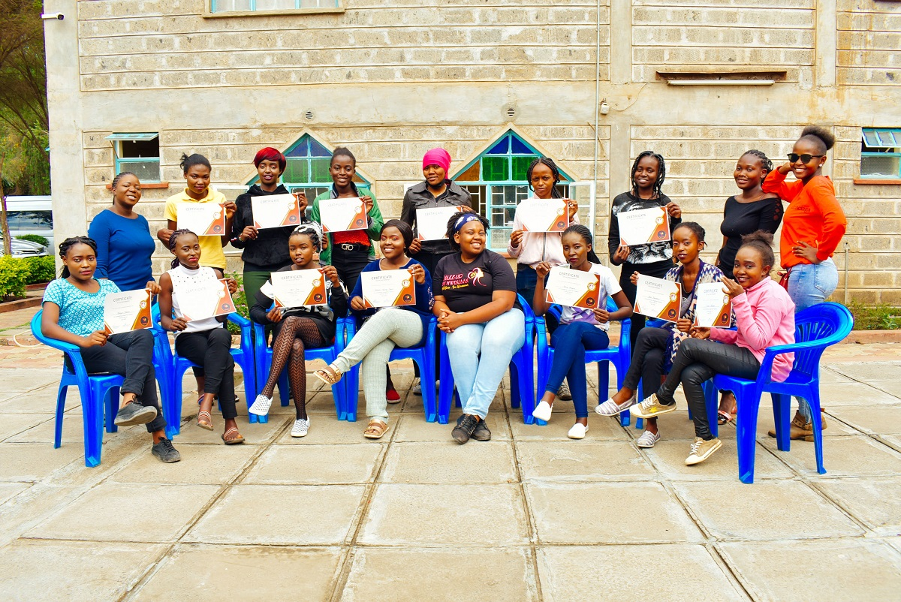

Gender equality is critical for all countries' and societies' prosperity and long-term growth, ensuring that no one is left behind. Gender equality and women's empowerment are highlighted in Sustainable Development Goal (SDG) 5 of the United Nations 2030 Agenda for Sustainable Development, which aims to achieve gender equality and empower all women and girls by 2030.
We have committed ourselves to the objective of women's economic empowerment in collaboration with other organizations. We recognize that empowering women economically is a win-win situation that benefits not only women but society as a whole. It helps women attain their rights and well-being while also lowering household poverty, enhancing economic development and production, and improving efficiency.

We want to help young women under the age of 35 in the community to develop the skills they need to succeed and advance economically. Women require market-ready skills and resources, as well as fair and equitable access to economic institutions. To be in a position of power and authority. Women must be able to make and act on decisions, as well as control resources and earnings, in order to benefit from economic activity.
We also had a chance to train the young women with money making skills on the makeup workshop for two days and after the training they were awarded with certificate with the skill they can be able to provide for themselves together with their children.